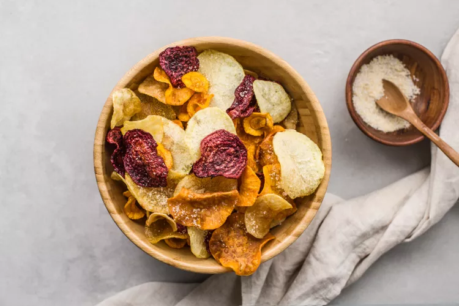

Chips de vegetales caseros

Ingredientes:
- 1 yuca
- 2 zanahorias
- 2 remolachas
- 1 ramita de romero
- sal (al gusto)
- 1/2 taza de azúcar
- Pimienta
¿Cómo prepararlo?!
- Corta las verduras Lava la remolacha, quítale el tallo y pélala. Pela las zanahorias y despúntalas. Corta las verduras en láminas finas con una mandolina.
- Sazona las láminas Extiende las láminas en una bandeja de horno forrada con papel sulfurizado. Píntalas con aceite y espolvoréalas con una mezcla de sal, pimienta y romero picado.
- Hornea las chips Da la vuelta a las rodajas y repite el proceso. Introdúcelas en el horno precalentado a 180°.
- Dales la vuelta Hornea durante unos 20-25 minutos, dándoles la vuelta a mitad de cocción. Deben quedar secas y crujientes.